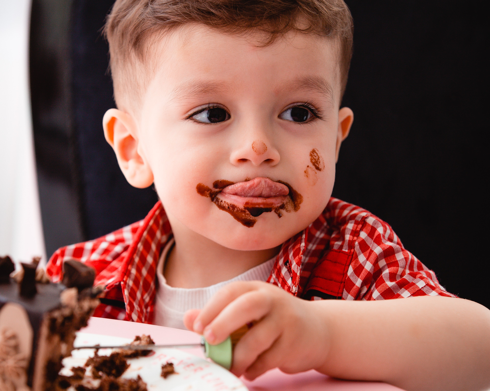
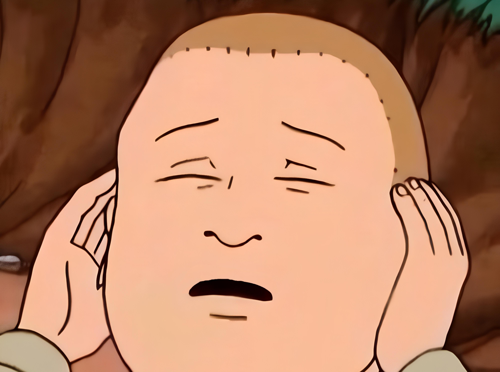
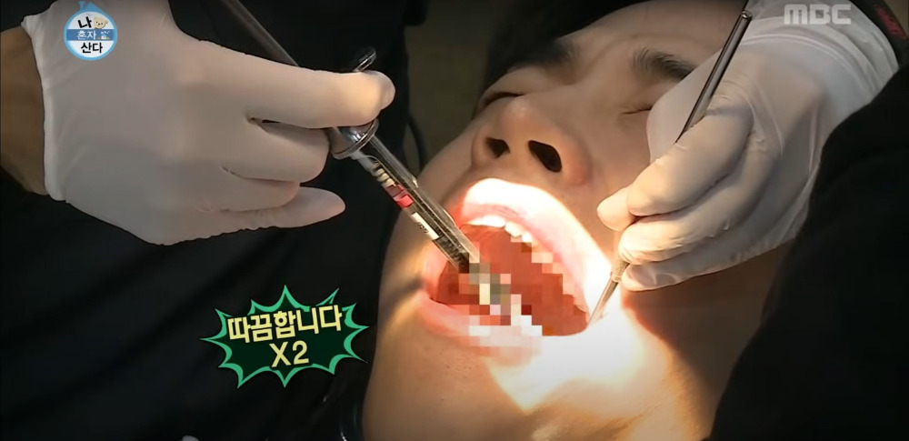
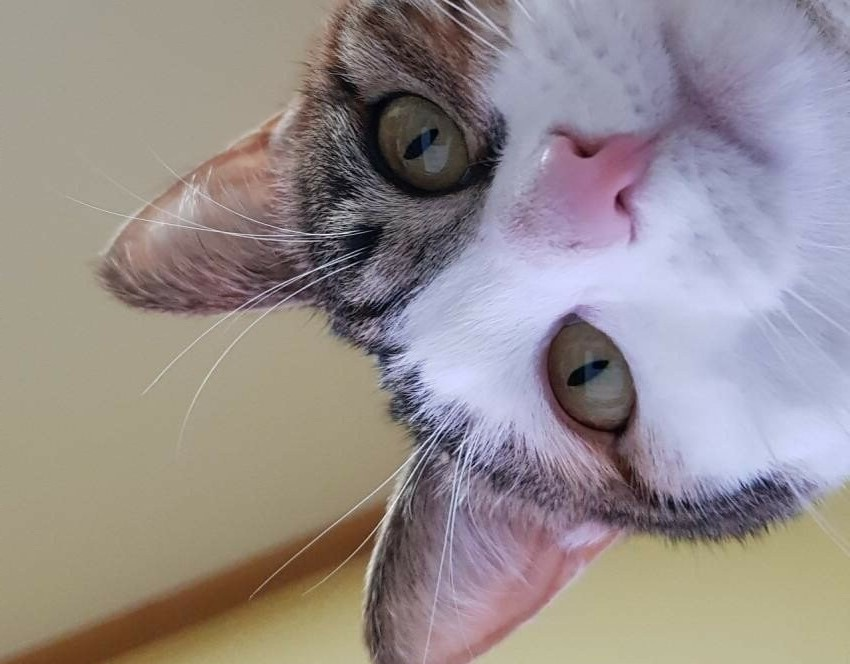
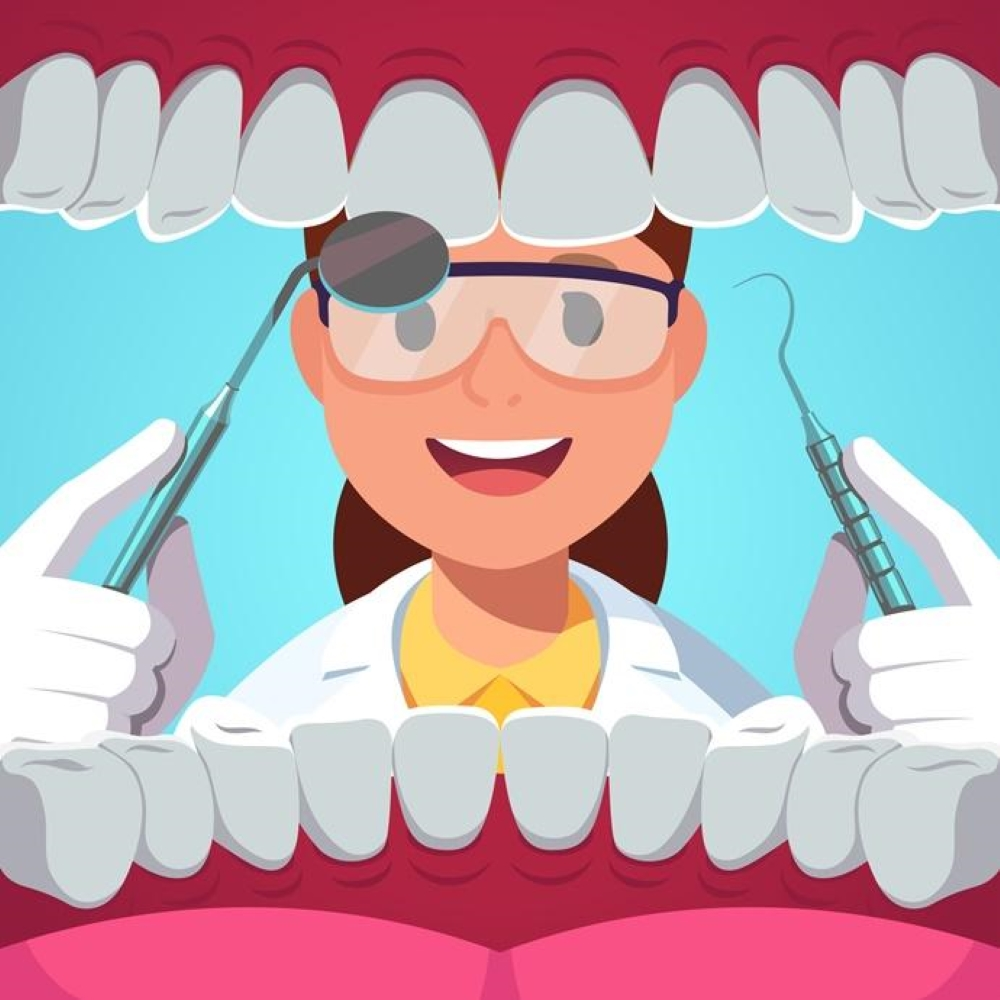

내면과 마주하다
졸업 전시를 마치고 평화로운 방학을 보내고 있었습니다. 평소처럼 양치를 하고 치실을 사용하던 저의 입속에 갑작스럽게 영토를 침범당한듯 어금니 한 구석에 검은색의 매우 작은 점이 보였습니다. 처음에는 부정하다가 다시 안경을 닦고 봐도 그대로인 어금니를 바라보며 결국 절망에 빠졌고, 갑자기 지난날들이 주마등처럼 지나갔습니다.
모든 일은 작년에 일어났습니다. 밤을 새면서 작업을 할 때면 양치를 하고 곧바로 다시 늘 옆에 끼우고 살았던 초콜릿, 젤리, 민트초코 스무디... 그 친구들과 힘겨웠던 졸업전시를 버텼던 지난날들이 저에게 한 가지 변화를 가져다준 겁니다. 결국 ‘충치’라는 새로운 침입자의 존재를 받아들이고 빠른 시일 내에 치과를 가기로 결심했습니다.
시련을 이겨내 보자는 다짐으로 예약을 한 뒤 치과에 가기 전 저는 마음의 준비를 위해 갑자기 이런저런 정보를 찾아보기 시작했고, 무서워하면서도 굳이 치과 치료 관련 영상이나 후기를 찾아보았습니다. 그러다 치과공포증(dentophobia)이라는 말이 있을 정도로 무서워하는 사람들이 많은데 그 이유가 무엇일까 의문이 들었습니다.
치과에 들어가기만 하면 위잉거리는 알 수 없는 드릴 소리와 여러 기계 소리를 들을 수 있습니다. 제가 듣기에는 뭔가 공포영화에 나올 거 같고 소름 돋는 소리라서 싫게 느껴졌습니다. 그렇다면 만약 아무 소리가 안나거나 듣기 좋은 음악 소리가 난다면 어떨까하는 쓸데없는 생각을 해봤습니다. (그래도 무서울 거 같은..)
사실 저는 아주 어릴 때를 제외하고는 치과에서 큰 치료를 하거나 마취주사를 맞은 적이 없습니다. 그럼에도 바늘이 잇몸을 뚫는 그 부정적인 기억 때문에 무서움이 남아있습니다. 지금까지 크게 다치거나 부러지거나 찢어진 적도 없어 나름 평탄한(?) 삶을 살아와 마취주사의 무서움이 저에게는 그 무엇보다 크게 다가옵니다. 어릴 때는 팔에 맞는 주사도 무서웠지만 이제 아무렇지 않아졌습니다. 그래도 치과 마취주사는 나이가 들어도 끝까지 무서울 거 같습니다. 지금의 무통주사는 은근히 기분나쁜 느낌이거나 아프다는 사람도 있던데 나중에는 전혀 안아픈 주사가 나오지 않을까 조심스레 기대해봅니다.
치과 의자를 보면 뒤로 눕혀지면서 뭔가 실험체가 된 듯 조명이 저의 입만 비추고 치과선생님이 저를 내려다보는 구도가 됩니다. 치과가 아닌 병원에서는 대부분 앉아서 진료를 보는데 생각해보니 치과는 특이한 구조로 진료를 봅니다. 특히 입만 뚫린 초록 천을 덮고 누워있는 저의 모습을 상상해보니 어색한 사람에게 보여주고 싶지 않은 모습입니다.
어쨋든 더는 미룰 수 없고 치과공포증이든 뭐든 치과로 향해야 합니다. 예약할 때까지만 해도 어쩔 수 없다는 생각이 컸지만 치과에 도착하니 알 수 없는 치과 드릴 소리와 함께 두려움이 더욱 커졌습니다. 조금 시리지만 마취 주사 없이 치료하는 게 나을거라는 선생님의 말을 믿고 공손히 손을 모은채 입을 벌리고 공포을 맞이할 준비를 끝냈습니다. 엄청 아프지는 않지만 기분나쁜 시림 뒤에 다 되었다는 말을 듣고 이겨냈다는 기쁜 마음으로 앉아있었습니다. 그렇게 끝난 줄 알았는데 치아 엑스레이를 보며 치과 의사선생님은 저에게 두 가지 사실을 말씀하셨습니다.
사실 저도 알고있었습니다. 사랑니가 함께 하고 있다는 것을... 하지만 치아 엑스레이에서 누워있는 저의 사랑니를 보았고 쉽지 않음을 직감했습니다. 그리고 저보다 먼저 들어온 분의 사랑니 발치 소리를 들어버렸고 그 분의 어두운 얼굴을 보고 난 뒤 도저히 용기가 나지 않아 일단 도망쳤습니다.
그치만 계속해서 뭔가 입속에서 자라나고 거슬리는 느낌과 사랑니가 주는 중압감.. 결국 밤새 사랑니 발치 후기를 찾아보게 되었습니다. 생각보다 매우 많은 후기가 저를 기다리고 있었는데 안 아프다는 후기도 있었지만 지옥을 보고 왔다는 후기도 보게 되었습니다. 그렇게 밤새 상상을 펼치면서 아직 뽑지도 않은 상태로 온갖 상상 속 고통을 겪었습니다.
결국.. 저는 아직도 사랑니와 함께 하고 있습니다. 아직 용기가 나지 않지만 지금도 문득 생각이 날 때면 새로운 후기를 찾아보고 있습니다. 수많은 후기에 두려움이 더 커진 저는 매일매일 미루고 있습니다. 그래도 무서운 치과 치료를 다시 겪고 싶지 않은 마음, 그것보다 더 무서운 치료 비용을 피하기 위해 더욱 열심히 양치를 하고 있습니다. 그치만 아직도 단 음식은 여전히 저의 옆에서 함께 하는 중입니다.
TO. 사랑니야, 제발 혼자 조용히 사라져 줘.